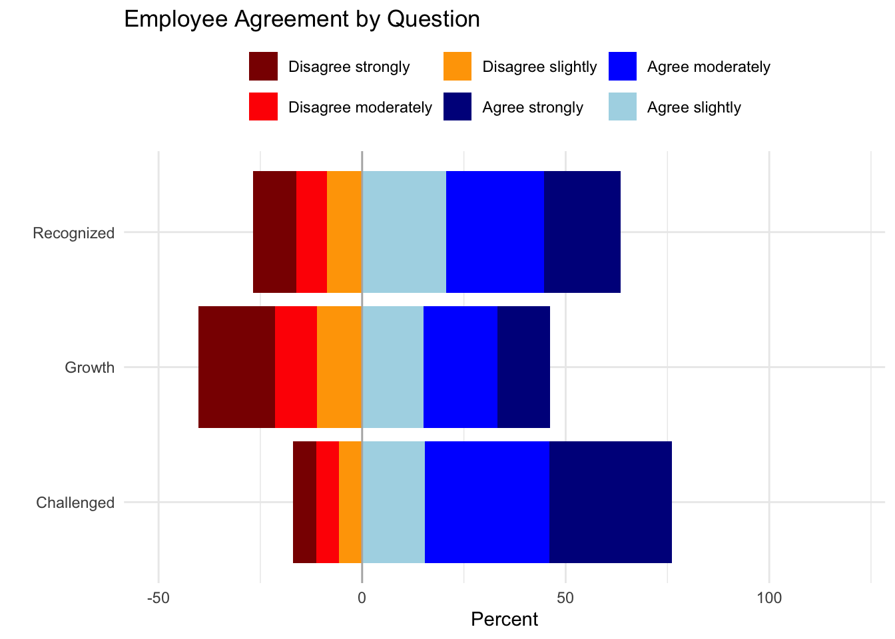
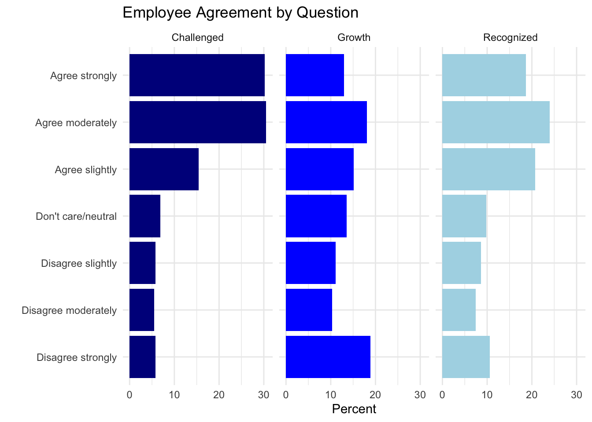

Likert scales often help us understand opinion data, and are formatted in symmetric agree/disagree scales. A common question could look like:
Q. To what level do you agree or disagree with the following statement: Pineapple belongs on pizza.
Strongly disagree
Disagree
Neither agree or disagree
Agree
Strongly agree
These types of questions are often used in surveys to gauge opinions, agreement, and overall satisfaction. With data in this form, it can be hard to visualize using our normal routes. In today’s lab, we will dive into how we can best visualize these data and explore different styles of comparison.
If you’d like to learn more about how we’ll be using them in this lab, feel free to read the article attached below!
To better demonstrate the specific ways in which we can visualize Likert data, we will go through an example that explores the four suggested plotting styles.
The data set that we’re exploring today is the Employee Perception Survey (EPS) from the Public Sector Commission of Western Australia:
“The purpose of this survey is to capture employee views about factors affecting their workplace, such as leadership, communication, work/life balance and performance development.
The EPS is typically conducted in each public sector organization with more than 70 employees once every five years. To improve the representation of the sample, organizations were selected across a range of sizes and portfolios. In 2016, all employees in 11 public sector organisations were asked to complete the survey. The average response rate to the survey was 53%, with 3883 valid responses received.”
Take a few minutes to explore the information by opening the link above. This should give you a deeper understanding of how the scale works for the survey, and how we can find meaning from the variables that are given to us in this data set. (Hint: Click on the “Question Key” and “Response Key” options on the right hand side of the page, under “Data Explorer.”)
Data Download
Before we start creating any visuals, we will load the data set into R. Download the EPS.csv file from Canvas and store the .csv file in the same directory as this .qmd so that you can import these data using a relative path:
Since we’ve already explored how the data set is formatted, we know that each column represents a question that was asked on the survey. The symmetric scales go from 1-7 representing:
“Very Satisfied” to “Very Dissatisfied”
“Strongly Agree” to “Strongly Disagree”
(Some also include an 8th option, “Do not know or does not apply”, so be aware of that when you choose your own questions to analyze later in the lab.)
First, we explore visualizing Likert data using a 100% Stacked Bar Plot. This means that the percentages will add up to 100% for each of the categories that we create so the responses are easily comparable between different questions.
We will pick three questions to analyze for each of the different visual options:
A2e: I am sufficiently challenged by my work
A2f: I am recognized for the contribution I make
A2g: I am satisfied with the opportunities available to me for career progression in my current agency
The following code selects the three columns and saves them as a new data frame called eps3 while removing any NA values:
library(ggplot2)library(tidyverse)eps3 <- eps |>select(A2e, A2f, A2g) |>filter_at(vars(A2e, A2f, A2g), all_vars(!is.na(.))) # Renaming to have better reference to the original questionseps3 <-rename(eps3, Challenged = A2e, Recognized = A2f, Growth = A2g)
Once we have this, we can work with our understanding of ggplot2 and bar charts to create a stacked bar chart:
Currently, the responses are recorded in the data as numerical values from 1 to 8. Let’s recode the responses so that they align with the opinions expressed by those surveyed. To cut down on repetition, the following code chunk defines two functions recode_likert and relevel_likert.
library(forcats)recode_likert <-function(x) {case_when( x ==7~"Disagree strongly", x ==6~"Disagree moderately", x ==5~"Disagree slightly", x %in%c(4, 8) ~"Don't care/neutral", x ==3~"Agree slightly", x ==2~"Agree moderately", x ==1~"Agree strongly", )}relevel_likert <-function(x) {fct_relevel(x, "Disagree strongly", "Disagree moderately","Disagree slightly", "Don't care/neutral", "Agree slightly","Agree moderately","Agree strongly")}# Apply the functions to define and relevel the responseseps3 <- eps3 |>mutate(across(c(Challenged, Growth, Recognized), recode_likert)) |>mutate(Challenged =relevel_likert(Challenged))
The ggstats package has built-in functions for constructing plots specifically for Likert data. In the following code chunk, we use gglikert_stacked to create the 100% Stacked Bar Plot. The gglikert functions take wide-format Likert data, like we have in eps3 so we don’t need to pivot these data into a long format for this specific plot type.
Option 2 - Diverging bars with neutral responses centered
The next option for visualizing our data is to create a diverging bar chart with neutral responses centered. This chart makes it easier to see how negative, neutral, and positive responses compare across questions since the plot is centered at 0.
We can simply input the wide format eps3 dataset into the gglikert() function to create this default plot type for Likert data.
The next option for visualizing our data is to create a diverging bar chart with neutral responses separated from the disagree and agree responses. This chart makes it really clear what is positive and negative, or like and dislike as they are separated quite obviously and take out the neutrals as well.
In this step, we will do a lot more manipulation and tidying in order to make an informative graph. Look at the comments within the code chunk to learn more about what each step is doing!
# Pivot the eps3 datasete from wide to long formateps3_long <- eps3 |>pivot_longer(c(Challenged, Recognized, Growth), names_to ="Question", values_to ="Response") |>arrange(Response)# Groups and summarizes by question to create percent valueseps3_percent <- eps3_long |>group_by(Question, Response) |>summarise(n =n(), .groups ="drop") |>group_by(Question) |>mutate(Percent = n /sum(n) *100)# Creates negative percents for disagreement and positive for agreementeps3_percent_opinion <- eps3_percent |>filter(Response !="Don't care/neutral") |>mutate(PercentSigned =case_when( Response %in%c("Disagree strongly", "Disagree moderately", "Disagree slightly") ~-Percent, Response %in%c("Agree strongly", "Agree moderately", "Agree slightly") ~ Percent )) |>mutate(Response =fct_relevel(Response, "Disagree strongly", "Disagree moderately","Disagree slightly","Agree strongly","Agree moderately","Agree slightly"))# Create a separate dataset for the neutral responses that# contains instruction on how to manually create the neutral# barseps3_percent_neutral <- eps3_percent |>filter(Response =="Don't care/neutral") |>mutate(xmin =100,xmax =100+ Percent,Question =factor(Question) )# Plot! Start with diverging bars for only the agree/disagree responsesp <-ggplot() +geom_bar(data = eps3_percent_opinion, aes(x = PercentSigned, y = Question, fill = Response), stat ="identity") +scale_fill_manual(values =c( "Agree strongly"="blue4","Agree moderately"="blue","Agree slightly"="lightblue","Don't care/neutral"="grey","Disagree slightly"="orange","Disagree moderately"="red","Disagree strongly"="red4") ) +geom_vline(xintercept =0, color ="gray70") +labs(x ="Percent",y ="",title ="Employee Agreement by Question",fill ="" ) +theme_minimal() +theme(legend.position ="top") +xlim(-50, 120) p

# Manually add separate bars for the neutral responsesp +geom_rect(data = eps3_percent_neutral, aes(xmin =100, xmax =100+ Percent, ymin =as.numeric(Question) -0.4,ymax =as.numeric(Question) +0.4, fill = Response) )
Option 4 - Small multiple bars
This option for visualizing Likert data splits the responses up easily by question so we can see the distribution of responses quite well. The downside to this is that we lose our sense of comparison between questions as they are not showing overlapping areas.
# Reorder again since the last graph had us do order them in a funny way to show the way we wanteps3_percent$Response <-factor(eps3_percent$Response, levels =c("Disagree strongly", "Disagree moderately", "Disagree slightly", "Don't care/neutral","Agree slightly","Agree moderately", "Agree strongly"))# Plot!ggplot(eps3_percent, aes(x = Percent, y = Response, fill = Question)) +geom_bar(stat ="identity") +scale_fill_manual(values =c( "Challenged"="blue4","Growth"="blue","Recognized"="lightblue" ) )+labs(x ="Percent",y ="",title ="Employee Agreement by Question",fill ="" ) +theme_minimal() +theme(legend.position ="none")+facet_wrap(vars(Question))

Now it’s your turn!
Using the same data, pick out 3 new questions that all have the same scale.
Which questions did you select? What are the possible responses for the questions you picked?
Your answer here …
Create a 100% Stacked Bar Plot that displays the responses for the questions you picked.
# Your code here ...
Now create a Diverging Bar Plot (with neutral responses centered or separated - up to you).
# Your code here ...
Create Small Multiple Bar Plots faceted by question.
# Your code here ...
Of the three plots you created, which do you prefer? Consider the pros and cons of each method and discuss the benefits your preferred plot offers.
Your answer here …
All done! Now render the document to a pdf and submit with the qmd file on Canvas!